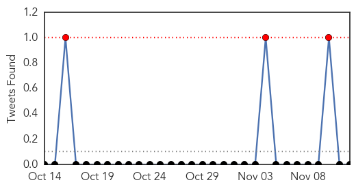
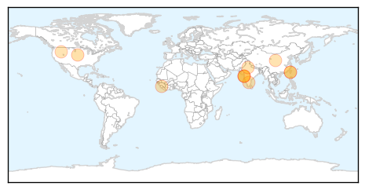

Dengue Fever
30-Day Web Trend
0 alerts, 0 warnings

30-Day Twitter Trend
3 alerts, 0 warnings

Article Locations
Article Confidences

Top Articles:
- 0.995
- First Ebola, now Dengue hemorrhagic fever has arrived in the U.S.
- 0.987
- Dengue-like fever panics patients, baffles doctors
- 0.977
- Taiwan Records 13 Fatalities, Over 10,000 Cases of Dengue
- 0.974
- Dengue in Mumbai: Activist files PIL urging Bombay HC to declare dengue as an epidemic
- 0.970
- Taiwan city uses seawater to combat dengue fever outbreak
- 0.957
- Dengue in Mumbai: Did media really 'hype' dengue menace in the city?
- 0.944
- 17-year-old Sewri boy is Mumbai's 13th dengue victim this year
- 0.917
- Two new dengue cases in Gurgaon
- 0.914
- Liow urges villages to step up anti-dengue efforts - Community
- 0.878
- Vigil stepped up against water-borne diseases
- 0.798
- 119 Nair employees donate blood for dengue patients
Top Tweets:
-
No tweets found for Nov 12, 2014
Influenza
30-Day Web Trend
0 alerts, 0 warnings

30-Day Twitter Trend
0 alerts, 0 warnings

Article Locations

Article Confidences

Top Articles:
- 0.996
- Now, doctors gear up to counter MERS
- 0.991
- Defending against the flu
- 0.985
- Researchers Receive Grant to Study New Influenza Virus
- 0.975
- Why I got the flu vaccine for myself and my children
- 0.974
- My children and I have been vaccinated against the flu
- 0.969
- Keep Flu Season at Bay with a Little Help from Standards
- 0.881
- Rule would allow hospitals to require masks for unvaccinated personnel
- 0.676
- New antiviral drug from Urals will help fight Ebola and other viruses
Top Tweets:
-
No tweets found for Nov 12, 2014